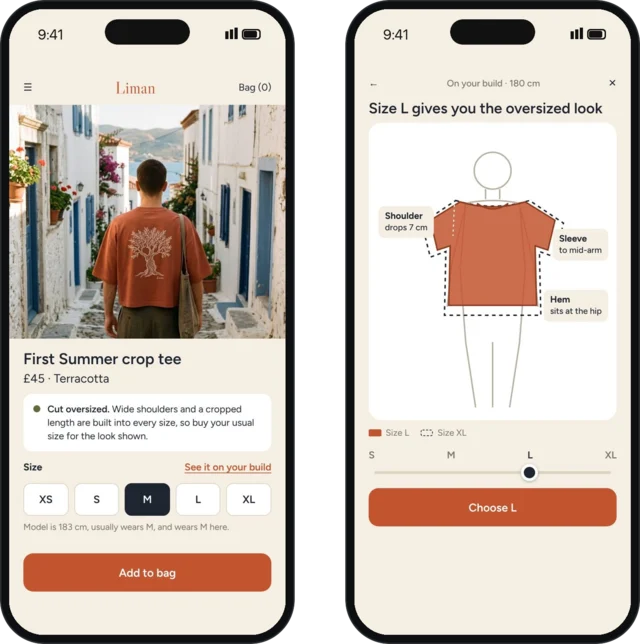
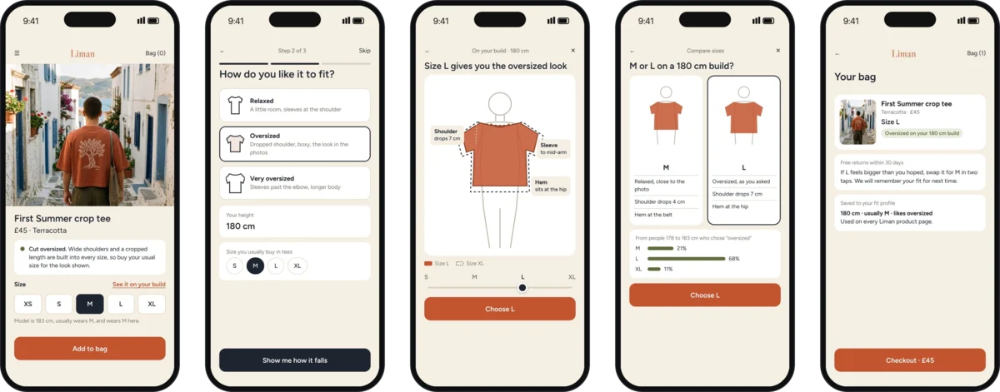

10.2DrapePersonal project · UX concept for Liman · 1 week2026
Drape
Buy an oversized fit without guessing.
Shoppers can’t tell whether “oversized” is already built into a cut, so they size up, size down or buy two. Drape shows how each size will fall on your own build, then recommends one. A self-initiated concept for my label, Liman.
- My role
- Solo: research, flows, wireframes, UI, test plan
- Type
- Personal project
- Platform
- Mobile web, Liman shop
- Status
- Concept, ready for usability testing

01Problem
Size charts give numbers. Shoppers want to see the fit.
I read sizing threads on five fashion subreddits about buying oversized tees online. The same question came up again and again, with three opposite answers: size down, buy your usual size, size up.
- 53%
- of apparel sellers name size and fit as the top return reason
- 87%
- of mobile apparel sites don’t give enough sizing information
- 48%
- of shoppers read reviews mainly for size and fit
Sources: Coresight Research, 2023; Baymard Institute.
- “Oversized” is ambiguous
- Shoppers can’t tell if the extra room is in the pattern or needs sizing up.
- Bodies beat tables
- People judge fit by comparing to a person, not by reading measurements.
- Fit is a preference
- The right size depends on how loose someone wants it.
02Final screens
Five screens, one decision.
How might we show a shopper how each size will fall on them, in under a minute? Drape opens on a recommendation, asks only what people know without a tape measure, and stays optional: confident shoppers keep the normal size buttons.

- 1 Product page
- A fit note and the model’s height sit beside the size buttons.
- 2 Three questions
- Fit, height, usual size. No tape measure.
- 3 Drape view
- The chosen size on their build, the next size dotted.
- 4 Compare
- Two sizes side by side, with what similar shoppers chose.
- 5 Bag
- Fit saved to a profile, and an easy swap if it’s wrong.
What I learned: the useful question was never “what size are you?” It was “how do you like it to fit?” Research changed the first screen. Next, I’d test it with five shoppers on their own phones, timing the choice and asking how confident they feel.
The comparison percentages on screen 4 are placeholder data for the concept.
 All work
All work